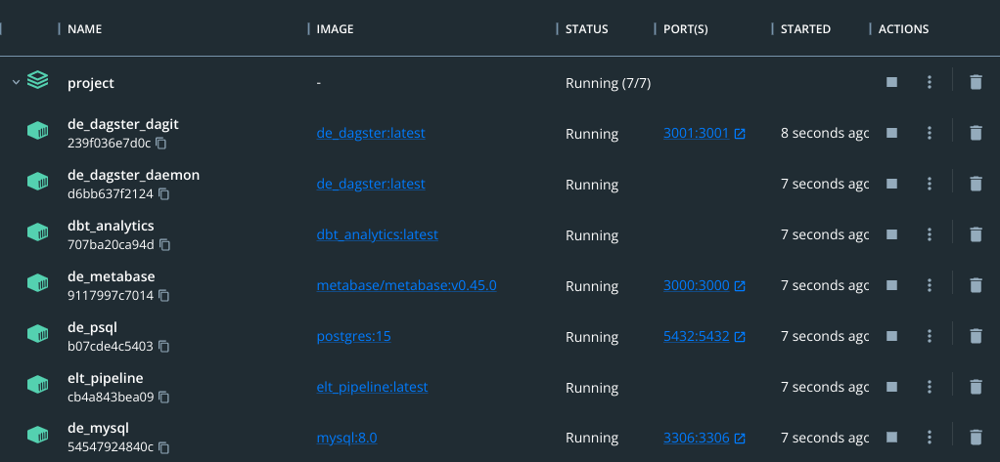

Trong project này mình sẽ hướng dẫn xây dựng một data pipeline cơ bản theo mô hình ELT (extract - load - transform), sử dụng bộ dữ liệu từ spotify để phân tích xu hướng nghe nhạc.
Project này hoàn thành dựa trên kiến thức đã học được từ khóa Fundamental Data Engineering của AIDE. Xin gửi lời cảm ơn đặc biệt tới thầy Nguyễn Thanh Bình, anh Ông Xuân Hồng và anh Hùng Lê.
Mục tiêu của project này là xây dựng một data pipeline để đưa dữ liệu của bảng spotify_tracks từ mySQL và my_tracks từ API của Spotify thành dashboard để phân tích. Các bảng được hỗ trợ bởi spotify_albums và spotify_artists như mô tả dưới đây:
spotify_tracks: OLTP table chứa thông tin bài hát từ spotify
my_tracks: lịch sử stream nhạc của bản thân, lấy schema giống spotify_tracks
# Setup python packages
make install
# Build docker images
make build
# Run locally
make up
# Check running containers
docker ps
# Check code quality
make check
make lint
# Use black to reformat if any tests failed, then try again
black ./elt_pipeline
# Test coverage
make test
Lúc này sẽ có 7 services sau đang chạy:

running services
Bây giờ chúng ta import dataset spotify (dạng csv) vào mySQL:
# Enter mysql cli
make to_mysql
SETGLOBALlocal_infile=true;-- Check if local_infile is turned on
SHOWVARIABLESLIKE"local_infile";exit
Source từng file theo thứ tự:
# Create tables with schema
make mysql_create
# Load csv into created tables
make mysql_load
# Set their foreign keys
make mysql_set_foreign_key
Khởi tạo schema và table trong PostgreSQL:
# Enter psql cli
make psql_create
Testing:
# Test utils
python3 -m pytest -vv --cov=utils elt_pipeline/tests/utils
# Test ops
python3 -m pytest -vv --cov=ops elt_pipeline/tests/ops
ELT pipeline gồm 2 job chạy 2 tác vụ độc lập: EL data từ MySQL và EL data từ API nhưng nhìn chung chúng có cấu trúc giống nhau. Cụ thể:
extractdata_from{mysql/api}: Lấy data từ MySQL hoặc api (thông qua access token) và lưu tạm dưới dạng pandas.DataFrame. Tùy theo chiến lược ingest data (full load/incremental by partition/incremental by watermark) mà có cách giải quyết phù hợp.
load_data_to_s3: Tiền xử lý data types cho DataFrame từ upstream và load vào S3 dưới dạng parquet.
load_data_to_psql: Extract data dạng parquet trong S3 thành pandas.DataFrame và load vào PostgreSQL. Để dữ liệu được toàn vẹn (không bị crash, lỗi đường truyền) trong quá trình crash, ta tạo TEMP TABLE và load vào đó trước.
validate_{mssql2psql/api2psql}_ingestion: Thẩm định 3 step trên đã được EL thành công hay chưa
trigger_dbt_spotify: Sensor để trigger dbt nhằm transform data.
Lấy data từ MySQL hoặc api (thông qua access token) và lưu tạm dưới dạng pandas.DataFrame. Tùy theo chiến lược ingest data (full load/incremental by partition/incremental by watermark) mà có cách giải quyết phù hợp.
Ta định nghĩa phương thức extract data của mysql và api trong thư mục utils.
defextract_data(self,token:str)->pd.DataFrame:(code,content)=self.get_recently(50,token)my_tracks={"album_id":[],"artists_id":[],"track_id":[],"track_unique_id":[],"name":[],"popularity":[],"type":[],"duration_ms":[],"played_at":[],"danceability":[],"energy":[],"track_key":[],"loudness":[],"mode":[],"speechiness":[],"acousticness":[],"instrumentalness":[],"liveness":[],"valence":[],"tempo":[],}items=content.get("items",[])foriteminitems:# Take album_id, artists_id, track_id, name, popularity, type, duration_msplayed_at=item.get("played_at",[])track=item.get("track",[])album=track.get("album",[])album_id=album.get("id",[])artists=track.get("artists",[])artists_id=[]forartistinartists:artists_id.append(artist.get("id",[]))track_id=track.get("id",[])name=track.get("name",[])popularity=track.get("popularity",[])type=track.get("type",[])duration_ms=track.get("duration_ms",[])# Take featuresfeatures=self.get_features(track_id,token)danceability=features.get("danceability",[])energy=features.get("energy",[])track_key=features.get("key",[])loudness=features.get("loudness",[])mode=features.get("mode",[])speechiness=features.get("speechiness",[])acousticness=features.get("acousticness",[])instrumentalness=features.get("instrumentalness",[])liveness=features.get("liveness",[])valence=features.get("valence",[])tempo=features.get("tempo",[])# Extract row into dictmy_tracks["album_id"].append(album_id)my_tracks["artists_id"].append(artists_id)my_tracks["track_id"].append(track_id)my_tracks["track_unique_id"].append(track_id+played_at)my_tracks["name"].append(name)my_tracks["popularity"].append(popularity)my_tracks["type"].append(type)my_tracks["duration_ms"].append(duration_ms)my_tracks["played_at"].append(played_at[:10])my_tracks["danceability"].append(danceability)my_tracks["energy"].append(energy)my_tracks["track_key"].append(track_key)my_tracks["loudness"].append(loudness)my_tracks["mode"].append(mode)my_tracks["speechiness"].append(speechiness)my_tracks["acousticness"].append(acousticness)my_tracks["instrumentalness"].append(instrumentalness)my_tracks["liveness"].append(liveness)my_tracks["valence"].append(valence)my_tracks["tempo"].append(tempo)pd_data=pd.DataFrame(my_tracks)returnpd_data
defextract_data_from_mysql(context,run_config):updated_at=context.op_config.get("updated_at")context.log.info(f"Updated at: {updated_at}")ifupdated_atisNoneorupdated_at=="":context.log.info("Nothing to do!")returnNonecontext.log.info(f"Op extracts data from MySQL at {updated_at}")# Choose extract strategy (default: full load)sql_stm=f"""
SELECT *
FROM {run_config.get('src_tbl')} WHERE 1=1
"""ifrun_config.get("strategy")=="incremental_by_partition":ifupdated_at!="init_dump":sql_stm+=f""" AND CAST({run_config.get('partition')} AS DATE) = '{updated_at}' """ifrun_config.get("strategy")=="incremental_by_watermark":data_loader=get_data_loader(run_config.get("db_provider"),run_config.get("target_db_params"))watermark=data_loader.get_watermark(f"{run_config.get('target_schema')}.{run_config.get('target_tbl')}",run_config.get("watermark"),)watermark=(updated_atifwatermarkisNoneorwatermark>updated_atelsewatermark)ifupdated_at!="init_dump":sql_stm+=f""" AND {run_config.get('watermark')} >= '{watermark}' """context.log.info(f"Extracting with SQL: {sql_stm}")db_loader=MysqlLoader(run_config.get("src_db_params"))pd_data=db_loader.extract_data(sql_stm)context.log.info(f"Data extracted successfully with shape: {pd_data.shape}")# Update paramsrun_config.update({"updated_at":updated_at,"data":pd_data,"s3_path":f"bronze/{run_config.get('data_source')}/{run_config.get('ls_target').get('target_tbl')}","load_dtypes":run_config.get("load_dtypes"),})returnrun_config
defextract_data_from_api(context,run_config):updated_at=context.op_config.get("updated_at")context.log.info(f"Updated at: {updated_at}")ifupdated_atisNoneorupdated_at=="":context.log.info("Nothing to do!")returnNonecontext.log.info(f"Op extracts data from API at {updated_at}")# Extract strategy (only support incremental_by_partition)context.log.info(f"Extracting on date: {updated_at}")api_loader=ApiLoader(run_config.get("src_api_params"))token=api_loader.get_api_token()pd_data=api_loader.extract_data(token)index_played_at=pd_data[pd_data["played_at"]!=updated_at].index# Drop datapd_data.drop(index_played_at,inplace=True)context.log.info(f"Data loaded and filtered successfully with shape: {pd_data.shape}")run_config.update({"updated_at":updated_at,"data":pd_data,"s3_path":f"bronze/{run_config.get('data_source')}/{run_config.get('ls_target').get('target_tbl')}","load_dtypes":run_config.get("load_dtypes"),})returnrun_config
defload_data_to_s3(context,upstream):ifupstreamisNone:returnNoneupdated_at=upstream.get("updated_at")s3_bucket=os.getenv("DATALAKE_BUCKET")iftype(updated_at)==list:updated_at=max(updated_at)s3_file=f"s3://{s3_bucket}/{upstream.get('s3_path')}/updated_at={updated_at}"context.log.info(f"Loading data to S3: {s3_file}")# Load data to S3pd_data=upstream.get("data")# Preprocess dataload_dtypes=upstream.get("load_dtypes")try:forcol,data_typeinload_dtypes.items():ifdata_type=="str":pd_data[col]=pd_data[col].fillna("")pd_data[col]=pd_data[col].astype(str)pd_data[col]=pd_data[col].str.strip()pd_data[col]=pd_data[col].str.rstrip()pd_data[col]=pd_data[col].str.replace("'","")pd_data[col]=pd_data[col].str.replace('"',"")pd_data[col]=pd_data[col].str.replace(r"\n","",regex=True)elifdata_type=="int":cur_bit=np.log2(pd_data[col].max())ifcur_bit>32:pd_data[col]=pd_data[col].astype({col:"int64"})elifcur_bit>16:pd_data[col]=pd_data[col].astype({col:"int32"})elifcur_bit>8:pd_data[col]=pd_data[col].astype({col:"int16"})else:pd_data[col]=pd_data[col].astype({col:"int8"})elifdata_type=="float":pd_data[col]=pd_data[col].astype({col:"float32"})context.log.info(f"Data preprocessed successfully")exceptExceptionase:context.log.info(f"Exception: {e}")# Write parquet object to S3pa_data=pa.Table.from_pandas(df=pd_data,preserve_index=False)pq.write_table(pa_data,s3_file)context.log.info("Data loaded successfully to S3")# Update streamupstream.update({"s3_bucket":s3_bucket,"s3_file":s3_file})returnupstream
defload_data_to_psql(context,upstream):ifupstreamisNone:returnNone# Load data to targetcontext.log.info("Loading data to postgreSQL")context.log.info(f"Extracting data from {upstream.get('s3_file')}")pd_stag=pd.read_parquet(upstream.get("s3_file"))context.log.info(f"Extracted data shape: {pd_stag.shape}")iflen(pd_stag)==0:context.log.info("No data to upload!")return"No data to upload!"# Executedb_loader=PsqlLoader(upstream.get("target_db_params"))result=db_loader.load_data(pd_stag,upstream)context.log.info(f"Batch inserted status: {result}")returnresult
Sau khi deploy thành công pipeline, giờ là lúc đánh giá project.
Tốc độ: Tốc độ extract data khá chậm (vì load vào pandas.DataFrame 2 lần). Một số giải pháp thay thế:
polars, json, …
Kích thước: Chuyện gì sẽ xảy ra khi data lớn lên gấp 10x, 100x, 1000x? Lúc đấy ta cần xem xét các giải pháp giúp lưu trữ big data, thay đổi data warehouse thành Amazon RDS, Google BigQuery, …
Môi trường phát triển: Khi project có thêm nhiều người cùng sử dụng là cũng là lúc phân chia môi trường thành testing, staging, production.
Tăng lượng data: Tích hợp nhiều data hơn từ Spotify API: Khi ingest bài hát mới, ingest luôn thông tin về artist, album, tạo thành hệ sinh thái bài hát đầy đủ.
Stream ingestion: Dùng một tech stack khác cho job API theo hướng streaming. Hệ thống sẽ listen mỗi lần nghe xong bài hát là tự động cập nhật vào pipeline.
My wrap-up: Tự thực hành phân tích dữ liệu như tính năng wrap-up của spotify.
Recommender system: Thực hành làm một hệ thống gợi ý dựa trên những bài đã nghe.